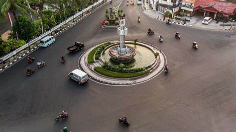

About
Salatiga (bahasa Jawa: ꦯꦭꦠꦶꦒ, pengucapan bahasa Jawa: [sɔlɔˈt̪igɔ]) adalah salah satu kota yang berada di provinsi Jawa Tengah, Indonesia, yang menjadi enklave dari Kabupaten Semarang. Kota Salatiga terletak 49 kilometer di sebelah Selatan Kota Semarang dan 52 kilometer di sebelah Utara Kota Surakarta, serta berada di jalan negara yang menghubungkan antara Kabupaten Semarang dengan kota Surakarta. Jumlah penduduk kota Salatiga hingga akhir tahun 2021 berjumlah 193.525 jiwa


Ada beberapa sumber yang dijadikan dasar untuk mengungkapkan asal-usul Salatiga, yaitu yang berasal dari cerita rakyat, prasasti, maupun penelitian dan kajian yang cukup detail. Dari beberapa sumber tersebut Prasasti Plumpungan-lah yang dijadikan dasar asal-usul Kota Salatiga. Berdasarkan prasasti ini Hari Jadi Kota Salatiga dibakukan, yakni tanggal 24 Juli tahun 750 Masehi ditetapkan dengan Peraturan Daerah Tingkat II Nomor 15 Tahun 1995 Tentang Hari Jadi Kota Salatiga.